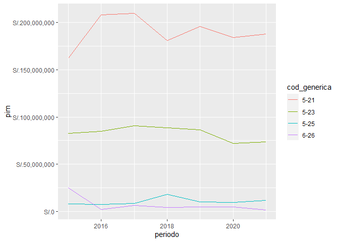

El objetivo de perutranspaeconomica es contar con una manera de obtener datos del Portal de Transparencia Económica Perú con una interfaz de programación consistente y escalable.
Code of Conduct
Please note that the perutranspaeconomica project is released with a Contributor Code of Conduct. By contributing to this project, you agree to abide by its terms.
Instalación
Existen varias maneras de descargar el paquete. En primer lugar, puedes descargar la versión estable desde CRAN:
install.packages('perutranspaeconomica')Otra opción es instalar la versión en desarrollo desde mi R-universe:
# Habilita el repositorio calderonsamuel
options(repos = c(
calderonsamuel = 'https://calderonsamuel.r-universe.dev',
CRAN = 'https://cloud.r-project.org'))
# Descargar e instalar perutranspaeconomica en R
install.packages('perutranspaeconomica')La versión en desarrollo también puede descargarse desde GitHub con:
# install.packages("remotes")
remotes::install_github("calderonsamuel/perutranspaeconomica")Ejemplo
Con este paquete puedes realizar consultas del Portal de Transparencia Económica del MEF-Perú, específicamente de los módulos de Consulta de gasto presupuestal y de Consulta de Ingreso Presupuestal.
El paquete propone un flujo de trabajo de 1) iniciar consulta, 2) elegir parámetros, y 3) ejecutar consulta. Para ello, se ha creado la clase <transpaeco> para consolidar una infraestructura interna consistente. El usuario común no va a necesitar interactuar con esa infraestructura directamente ya que se han agregado funciones de soporte que habilitan una interfaz de programación más amigable.
Empezamos por cargar el paquete:
Iniciar consulta
Para iniciar una consulta tan solo hace falta usar la función iniciar_transparencia_economica(). Esto crea un objeto vacío y muestra los parámetros de consulta agregados. Al inicio no tenemos parámetros ni data.
iniciar_transparencia_economica()
#>
#> ── Seguimiento al gasto presupuestal (actualizacion diaria) ────────────────────
#>
#> ── Parametros de consulta ──
#>
#> ── Data ──
#>
#> ℹ No se ha ejecutado ninguna consultaElegir parámetros de consulta
La elección de parámetros de consulta se hace con las funciones que empiezan con elegir_*().
Para consultas en el módulo de gasto presupuestal, se pueden utilizar las siguientes:
elegir_periodo_anual()elegir_quien_gasta()elegir_en_que_se_gasta()elegir_con_que_se_financia()elegir_como_se_estructura_gasto()elegir_cuando_se_hizo_gasto()elegir_donde_se_gasta()
Para consultas en el módulo de ingreso presupuestal, se pueden utilizar las siguientes:
elegir_periodo_anual()elegir_quien_recauda()elegir_fuentes_de_recaudacion()elegir_como_se_estructura_recaudacion()elegir_cuando_se_hizo_recaudacion()
En ambos módulos, la mínima requerida es elegir_periodo_anual().
Una vez que se le agrega parámetros a la consulta, la interfaz lo refleja.
iniciar_transparencia_economica() %>%
elegir_periodo_anual(periodo = 2023)
#>
#> ── Seguimiento al gasto presupuestal (actualizacion diaria) ────────────────────
#>
#> ── Parametros de consulta ──
#>
#> • Periodo anual: 2023
#>
#> ── Data ──
#>
#> ℹ No se ha ejecutado ninguna consultaCada argumento de las funciones elegir_*() puede aceptar vectores con más de un elemento para una consulta más potente.
iniciar_transparencia_economica() %>%
elegir_periodo_anual(periodo = 2020:2023)
#>
#> ── Seguimiento al gasto presupuestal (actualizacion diaria) ────────────────────
#>
#> ── Parametros de consulta ──
#>
#> • Periodo anual: 2020, 2021, 2022 y 2023
#>
#> ── Data ──
#>
#> ℹ No se ha ejecutado ninguna consultaCon excepción de elegir_periodo_anual(), es necesario que las funciones elegir_*() tengan, en su conjunto, al menos un argumento definido como "todos". Más adelante se verá que en caso contrario la consulta no prosperará.
iniciar_transparencia_economica() %>%
elegir_periodo_anual(periodo = 2023) %>%
elegir_quien_gasta(nivel = "E") %>%
elegir_donde_se_gasta(departamento_meta = "todos") # <- aquí se usó "todos"
#>
#> ── Seguimiento al gasto presupuestal (actualizacion diaria) ────────────────────
#>
#> ── Parametros de consulta ──
#>
#> • Periodo anual: 2023
#> • Nivel de gobierno: E
#> • Departamento (meta): *todos*
#>
#> ── Data ──
#>
#> ℹ No se ha ejecutado ninguna consultaTodos los métodos elegir_*() cuentan con documentación referente a cómo deben ser usados. Para mayor detalle consultar el método específico. Por ejemplo, help("elegir_quien_gasta") o ?elegir_quien_gasta.
La elección de parámetros no prosperará si se intenta definir más de un parámetro como "todos".
iniciar_transparencia_economica() %>%
elegir_periodo_anual(2022) %>%
elegir_quien_gasta(nivel = "todos") %>%
elegir_donde_se_gasta(departamento_meta = "todos")
#> Error: <transpaeco> object is invalid:
#> - Debe haber solo una propiedad con valor "todos"Todas las funciones de elegir_*() tratan de validar que los inputs provistos tengan una forma adecuada. Por ejemplo, generica debe seguir la forma "0-0-0", donde cada 0 representa un dígito. Al proveer un input mal formado, la validación provocará un error e indicará una expresión regular o listado de valores apropiados para el parámetro.
iniciar_transparencia_economica() %>%
elegir_periodo_anual(2022) %>%
elegir_como_se_estructura_gasto(generica = "5-20")
#> Error: <transpaeco> object is invalid:
#> - En modulo gasto, `generica` debe hacer match con expresion regular '^[5-7]-2-[0-9]$'Consultar
Una vez definidos los parámetros de la consulta, solo hace falta ejecutarla. Para ello, usamos la función consultar(). Esto nos devolverá la data requerida.
# ¿Cuál fue la ejecución presupuestal por departamento en el gobierno nacional?
# Para el año 2022
iniciar_transparencia_economica() %>%
elegir_periodo_anual(2022) %>%
elegir_quien_gasta(nivel = "E") %>%
elegir_donde_se_gasta(departamento_meta = "todos") %>%
consultar()
#> ℹ Iniciando consulta
#> ℹ Unificando consultas...
#> ✔ Consultas realizadas y unificadas
#> # A tibble: 26 × 13
#> periodo cod_departamento_meta desc_departamento_meta pia pim
#> <dbl> <chr> <chr> <dbl> <dbl>
#> 1 2022 01 AMAZONAS 1.03e9 1.04e9
#> 2 2022 02 ANCASH 3.37e9 3.09e9
#> 3 2022 03 APURIMAC 9.13e8 1.06e9
#> 4 2022 04 AREQUIPA 2.19e9 2.18e9
#> 5 2022 05 AYACUCHO 1.14e9 1.31e9
#> 6 2022 06 CAJAMARCA 2.03e9 2.24e9
#> 7 2022 07 PROVINCIA CONSTITUCIONAL DEL CAL… 2.72e9 3.14e9
#> 8 2022 08 CUSCO 3.20e9 3.46e9
#> 9 2022 09 HUANCAVELICA 1.06e9 8.98e8
#> 10 2022 10 HUANUCO 1.64e9 1.51e9
#> # ℹ 16 more rows
#> # ℹ 8 more variables: certificacion <dbl>, compromiso_anual <dbl>,
#> # atencion_de_compromiso_mensual <dbl>, devengado <dbl>, girado <dbl>,
#> # avance_percent <dbl>, nivel <chr>, departamento_meta <chr>La consulta no prosperará si alguna función de elegir_*() (con excepción de elegir_periodo_anual()) no cuenta con ningún parámetro como definido como "todos".
iniciar_transparencia_economica() %>%
elegir_periodo_anual(2022) %>%
elegir_quien_gasta(nivel = "E") %>%
elegir_donde_se_gasta(departamento_meta = "01") %>%
consultar()
#> Error in `check_pre_consulta()`:
#> ! Se debe elegir un parametro de desagregacion con "todos"Se recomienda asignarle nombre a una consulta ejecutada para evitar posibles tediosas re-descargas, especialmente cuando la consulta usa parámetros con vectores más grandes.
# ¿Cómo se ejecutó el gasto por genérica para el PP 0031 entre el 2015 y 2021?
mi_consulta <- iniciar_transparencia_economica() %>%
elegir_periodo_anual(2015:2021) %>%
elegir_en_que_se_gasta(categoria_presupuestal = "0031") %>%
elegir_como_se_estructura_gasto(generica = "todos") %>%
consultar()
#> ℹ Iniciando consulta
#> ⠙ 1/7 ETA: 6s | Ejecutando consulta ⠹ 2/7 ETA: 6s | Ejecutando consulta ⠸ 3/7 ETA: 5s | Ejecutando consulta ⠼ 4/7 ETA: 3s | Ejecutando consulta ⠴ 5/7 ETA: 2s | Ejecutando consulta ⠦ 6/7 ETA: 1s | Ejecutando consulta ℹ Unificando consultas...
#> ✔ Consultas realizadas y unificadas
mi_consulta
#> # A tibble: 28 × 13
#> periodo cod_generica desc_generica pia pim
#> <int> <chr> <chr> <dbl> <dbl>
#> 1 2015 5-21 PERSONAL Y OBLIGACIONES SOCIALES 161861223 1.62e8
#> 2 2015 5-23 BIENES Y SERVICIOS 104378682 8.25e7
#> 3 2015 5-25 OTROS GASTOS 7000000 7.93e6
#> 4 2015 6-26 ADQUISICION DE ACTIVOS NO FINANCIEROS 26120000 2.51e7
#> 5 2016 5-21 PERSONAL Y OBLIGACIONES SOCIALES 208112423 2.08e8
#> 6 2016 5-23 BIENES Y SERVICIOS 79975551 8.47e7
#> 7 2016 5-25 OTROS GASTOS 7000000 7.45e6
#> 8 2016 6-26 ADQUISICION DE ACTIVOS NO FINANCIEROS 0 2.15e6
#> 9 2017 5-21 PERSONAL Y OBLIGACIONES SOCIALES 209308943 2.09e8
#> 10 2017 5-23 BIENES Y SERVICIOS 84184599 9.08e7
#> # ℹ 18 more rows
#> # ℹ 8 more variables: certificacion <dbl>, compromiso_anual <dbl>,
#> # atencion_de_compromiso_mensual <dbl>, devengado <dbl>, girado <dbl>,
#> # avance_percent <dbl>, categoria_presupuestal <chr>, generica <chr>Una vez obtenida la consulta requerida, es posible tratar los datos obtenidos como cualquier otro dataframe en R. Por ejemplo, para calcular el porcentaje de presupuesto destinado a personal y obligaciones sociales por periodo anual.
library(dplyr)
mi_consulta %>%
group_by(periodo) %>%
mutate(porc_presupuesto = (pim/sum(pim)*100) %>% round(1)) %>%
ungroup() %>%
filter(desc_generica == "PERSONAL Y OBLIGACIONES SOCIALES")
#> # A tibble: 7 × 14
#> periodo cod_generica desc_generica pia pim
#> <int> <chr> <chr> <dbl> <dbl>
#> 1 2015 5-21 PERSONAL Y OBLIGACIONES SOCIALES 161861223 161903973
#> 2 2016 5-21 PERSONAL Y OBLIGACIONES SOCIALES 208112423 208113793
#> 3 2017 5-21 PERSONAL Y OBLIGACIONES SOCIALES 209308943 209308943
#> 4 2018 5-21 PERSONAL Y OBLIGACIONES SOCIALES 180890881 180890881
#> 5 2019 5-21 PERSONAL Y OBLIGACIONES SOCIALES 200538695 195441649
#> 6 2020 5-21 PERSONAL Y OBLIGACIONES SOCIALES 183923246 183923246
#> 7 2021 5-21 PERSONAL Y OBLIGACIONES SOCIALES 187837669 187842487
#> # ℹ 9 more variables: certificacion <dbl>, compromiso_anual <dbl>,
#> # atencion_de_compromiso_mensual <dbl>, devengado <dbl>, girado <dbl>,
#> # avance_percent <dbl>, categoria_presupuestal <chr>, generica <chr>,
#> # porc_presupuesto <dbl>También es posible usar los datos obtenidos directamente para un gráfico con ggplot2.
library(ggplot2)
mi_consulta %>%
ggplot(aes(periodo, pim, color = cod_generica)) +
geom_line() +
scale_y_continuous(labels = scales::label_dollar(prefix = "S/."))